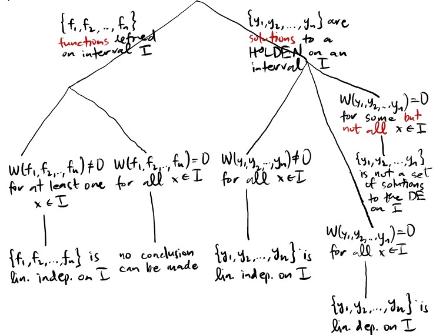

an(x), an − 1(x), ..., a0(x), g(x) are continuous on any interval I
an(x) ≠ 0 on I
then the IVP has a unique solution on I.
When given an nth order linear differential equation (OLDEN) without initial conditions, the set of solutions will not be unique.
There are two types of OLDEN, the homogeneous (HOLDEN) and the non-homogeneous (NOLDEN), where the HOLDEN comes in the form an(x)
+
an − 1(x)
+ ... + a1(x)
+ a0(x)y = 0 and NOLDEN comes in the form an(x)
+
an − 1(x)
+ ... + a1(x)
+ a0(x)y = g(x) where g(x) ≠ 0
With HOLDEN's you can add/subtract two solutions to get a third solution, and any scalar multiple of a solution is also a solution.
HOLDEN's technically have unlimited solutions, so we describe a structure of solutions as a linearly independent set { f1(x), f2(x), ..., fn(x)}
Linearly independent means that there's no repetition.
A set of functions is linearly dependent on an interval I if there exists constants c1, c2, ..., c3 that are not all 0, so that c1f1(x)
+ c2f2(x) + ... + cnfn(x) = 0 for all x ∈ I. If
c1 = c2 = ... = cn = 0 is the only solution, then we say that the functions are linearly independent on I.
One way to solve for those constants is to differentiate the equation as many times as needed, extending this approach we get a matrix equation:
=
A theorem states that if functions are linearly dependent and differentiable, then for all x ∈ I, the Wronskian W
det
= 0
Looking at the contrapositive of this theorem helps us find out whether a set can be considered linearly independent: If there exists at least one x ∈ I such that
W(
f1, f2, ..., fn) = det
≠ 0
then the functions f1, f2, ..., fn are linearly independent.
When you have a HOLDEN and a set of solutions that are solutions to the HOLDEN and are linearly independent, that is a fundamental set of solutions, and any solution to a HOLDEN can be written as y(x) = c1y1 + c2y2 + ... + cnyn
A HOLDEN of n order will have n solutions

To convert a NOLDEN to HOLDEN we can subtract two solutions
4.2: Reduction of Order:
4.3: HOLDEN's with Constant Coefficents:
To solve a HOLDEN we can substitute the derivatives of certain orders with variables m of certain orders. That makes an auxilliary equation.After solving that regular equation the fundamental set of solutions will be {em1x,
e
m2x, ..., emnx}
In the case of repeated roots, we multiply subsequent terms by another x. The set of solutions for a root of multiplicity k is {emx, xemx, x2emx,
..., xk − 1emx}
In the case of imaginary roots (when the root m = a ± bi), the set looks like {eaxbx, eaxbx}
4.4: The Method of Undetermined Coefficients (Guess & Hope):
In the case of NOLDEN's with constant coefficients, we
Find the solution to the corresponding HOLDEN (replace g(x) with 0)
Find the particular solution, which is one direct solution to the NOLDEN, and it should be similar to the structure or form of g(x)
The solution to the NOLDEN should be y(x) = (particular solution) + (linear combination of HOLDEN solutions) where a linear combination of {ex, ex2} would be c1ex + c2ex2 and so forth.
4.5/4.6: Differential Operators:
Another way to make the NOLDEN into a HOLDEN is to differentiate both sides completely until the right side (g(x)) really does become 0. Making that result into an auxilliary equation and solving the HOLDEN should give your answer.
The differential operator D(y) is another representation of
Dk(y) =
When it came to differentiating both sides until the right-hand side polynomial was annihilated, we differentiated n + 1 times for a polynomial of highest degree n. This can be rewritten as Dn + 1(xn)
= 0
When g(x) is an exponential function, we can cancel it out similarly. Some general rules for reference: